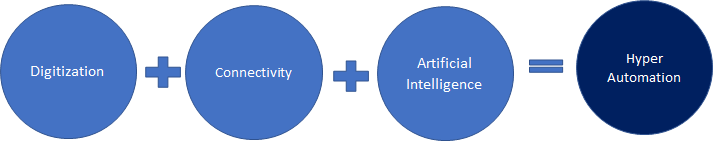
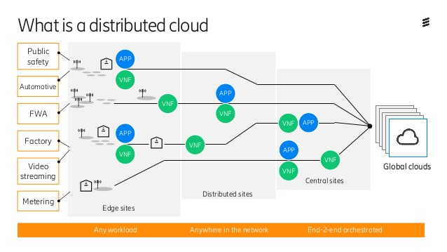

Hyperautomation:
Hyper-automation deals with the application of advanced technologies, including artificial intelligence (AI) and machine learning (ML), to increasingly automate processes and augment humans. Hyper-automation extends across a range of tools that can be automated, but also refers to the sophistication of the automation (i.e., discover, analyse, design, automate, measure, monitor, reassess.)To put it simply, hyper-automation refers to the mixture of automation technologies that exist to augment and expand human capabilities.
How is Hyper-automation Different from Regular Automation?
Terms like robotic process automation come to mind when we think of automation. But, hyper-automation is different, as it takes an ecosystem of technologically advanced tools and combines them to create a new way to work.Therefore lower value tasks are optimally performed with automation tools, advanced artificial intelligence and machiene learning so that outputs can be produced automatically and run efficiently with almost no human intervention. This then means that hyper-automation, together with humans, will be able to create a workplace that is always informed, agile and able to use date and insights for quick and accurate decision-making.
Benefits of Hyper-Automatation
The benefits of hyper-automation will allow your workforce to be educated with the latest business and marketplace information so that they can perform their roles optimally. Rather than being bogged down by low-level, repetitive tasks, your workforce will remain engaged with their jobs as they seek to resolve problems and provide creative solutions.Hyper-automation provides your business and its leaders with:
- Automated processes
- Advanced analytics
- Increased employee satisfaction and motivation
- An educated workforce
- Increased employee capacity
- Instant and accurate insights
- Greater compliance and reduced risk
- Greater productivity
- Increased team collaboration

https://www.solvexia.com
Multiexperience Development:
Multi-experience development platforms help enterprises to scale their applications rapidly across many devices and platforms. They can help you develop a
single application that can be deployed on a variety of devices. This greatly shortens down your efforts and gives brands more control over their digital experiences.
It is also a platform that is used for developing not just mobile and web applications, but also chat, voice, augmented reality and wearable experiences. MXDP platforms
help businesses quickly scale their app development projects across a range of devices, platforms, and form factors.
Benefits of Multiexperience Development:
- Increased internal operational efficiency
Due to its interconnected system, multi-experience devs help in streamlining processes, resulting in faster and more efficient operations in the development and delivery of experiences.
- Simplified digital transformation
Multi-experience devs have multi-channel and multi-device deployment abilities, which enable faster delivery and require less effort in the digital transformation journey.
- Reduced time to market
With a wide spread of tools and services that support development, multi-experience devs help create and deliver experiences ten times faster.
- Controlled deployment
Multi-experience devs help in streamlining your continuous deployment processes and ensure faster deployment to cloud service providers.

https://www.neutrionos.com
Distributed Cloud:
Distributed cloud is the application of cloud computing technologies to interconnect data and applications served from multiple geographic locations.
Distributed (in an information technology (IT) context) means that something is shared among multiple systems which may also be in different locations.
Distributed cloud speeds communications for global services and enables more responsive communications for specific regions.
Benefits Distributed Cloud:
- Distributed cloud computing provides repetition and dependability, as well as geo-replication as an encouragement in reducing the cost.
- Distributed cloud also offer immediate fail-overs by having remote replicas that can be reset up instantly in case of failing.
- The benefit in using the distributed cloud include it can reducing wide-are traffic.
- Reducing latency by using a nearby data center may be engaging for a group of mobile users hoping to work together on an interactive document, for computer gaming.
- It can give smooth access and early experience on programming distributed applications, also distributed state management.

https://www.e-spincorp.com